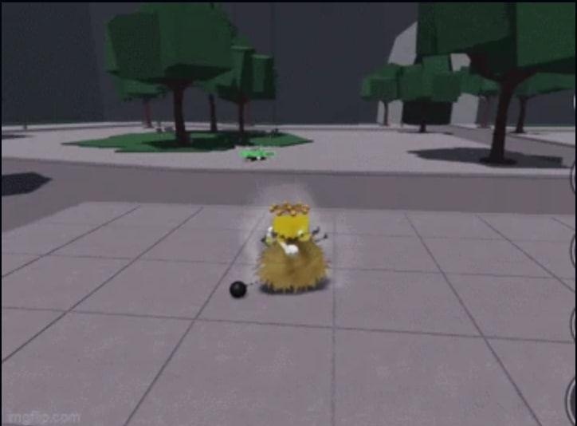
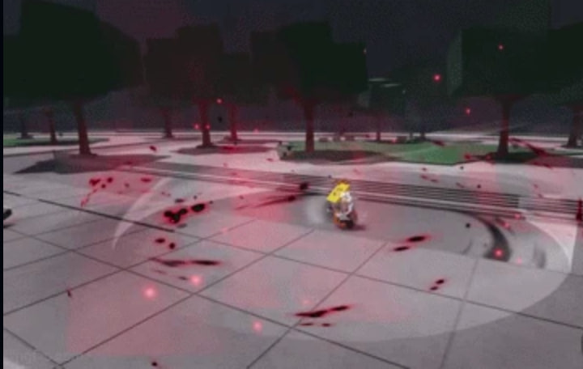
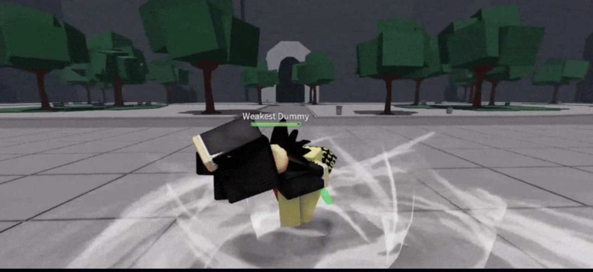

інформаціїї
<<Раскрытый потенциал>>
Заменяет все критические попадания на «Черные вспышки», однако снижает множитель урона от «Черной вспышки» до 4,5x (с 6x). Эти «Чёрные вспышки» действуют так же, как и обычный критический удар, то есть они длятся неограниченно долго, пока их не отбросит в сторону.
<<На этом всё должно закончиться.>>
Увеличенный урон от комбо-ударов по стенам
Увеличивает урон от комбо у стены до 32%, а также значительно увеличивает отбрасывающий эффект.
Источник
KJ основан на серии KJ, в основном анимированной студией Stealth, а также на KJ's Final Ride, также анимированной студией King из Hyun's Dojo.
Базовый набор движений
<<Опустошение>>
Пользователь готовится нанести мощный удар в живот, который подбрасывает противника в воздух, на мгновение отступает, а затем наносит два сильных удара, начиная серию быстрых атак, которая заканчивается восходящим апперкотом. Приём завершается тем, что пользователь быстро разворачивается вокруг противника и наносит сокрушительный удар ногой, отбрасывая его в сторону.Приём типа захвата. Броня на ходу. Невозможно заблокировать. Может схватить игрока, находящегося в состоянии «тряпичной куклы». Этому можно противостоять.
Быстрая уборка
Пользователь пригибается и наносит размашистый удар ногой по ногам противника, отчего тот падает на пол, после чего пользователь наносит прямой удар ногой в голову, заставляя противника откатиться назад. Невозможно заблокировать. Этому можно противостоять. Действует во многом как «Хватка охотника», отбрасывая противников дальше, если они стоят, и на расстояние, достаточное для рывка вперед, если они лежат на земле.
Залоговое разорение
Пользователь отводит руки назад, а затем резко взмахивает ими вперед. Сила удара настолько велика, что вокруг него образуется красное кольцо из чистой энергии, которое взрывается и отбрасывает противника (противников) в сторону. АОЕ Броня при использовании и во время атаки. Невозможно заблокировать. Противостоять этому невозможно.
Спиральный шторм
Игрок принимает боевую стойку. Если в течение этого времени игрок получит удар, он уклонится от атаки, затем дважды ударит противника в грудь, схватит его, быстро развернется и отбросит в сторону. Броня во время атаки. АОЕ-атаки могут обходить счетчик смертей и смертельный удар .
Настенный комплект KJ
Яростная пощёчина
Пользователь наносит мощный толчок противнику, прижимая его к стене и заставляя споткнуться и опустить голову. Когда противник поднимает голову, пользователь топает ногой по земле, отбрасывая его назад силой удара. Затем пользователь отводит руку назад и наносит мощный удар по противнику, вызывая Черную Вспышку и отбрасывая его влево.